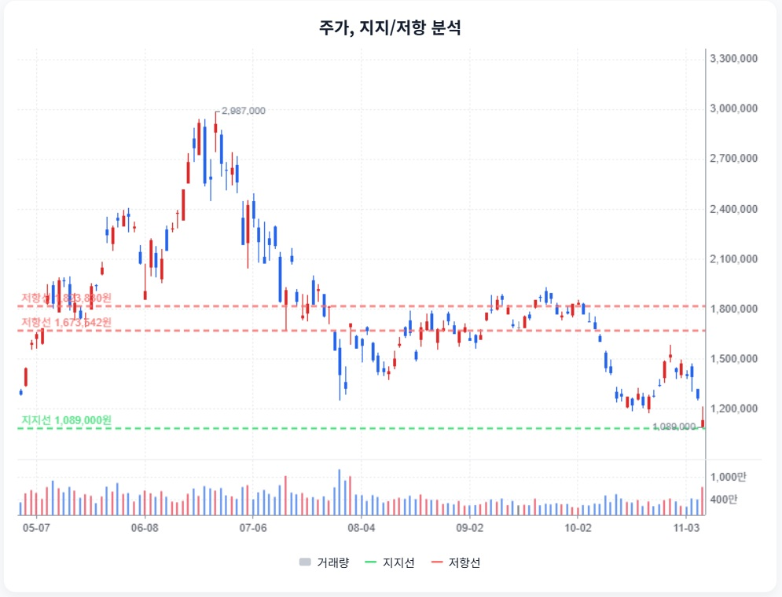
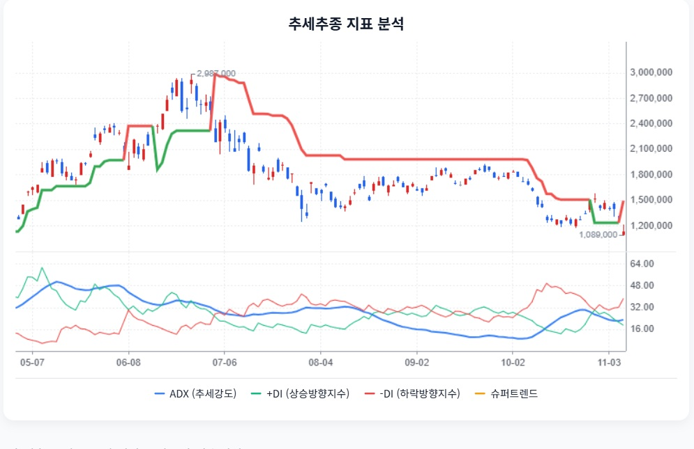
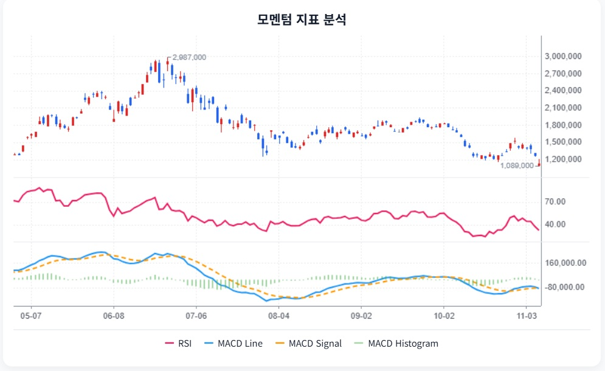

SK하이닉스 · StockEasy 읽기용 정리
첨부 확인 2026-11-08 · 핵심 내용을 문단별로 재구성했습니다. 원문 전체 전사가 아니며, 차트는 첨부 화면에서 발췌했습니다. 원문의 매수·매도 표현과 가격 구간은 자동 매매 신호로 채택하지 않았습니다.
1. 추가 답변 재검토 · 버틸 근거와 훼손 조건
StockEasy 원문 요약 · 주장과 가정 포함
새 답변은 사업의 지속성·현금 여력·하방 시나리오를 제시했다. 설명의 구체성과 원문 확인 여부는 별개다.
2. 원문이 말하는 핵심 결론
StockEasy 원문 요약 · 주장과 가정 포함
StockEasy는 11월 6일 종가 1,132,000원을 기준으로, 고점 대비 하락률만으로 싸다고 판단하지 말자고 설명한다. HBM 성장과 현금 여력은 강점이지만 초호황 이익의 지속성은 별도로 검증해야 한다는 논리다.
원문이 제시한 51만~55만원은 정상화 EPS와 과거 PBR 가정을 적용한 구간이다. 기술적 관점에서는 하락 추세 속 과매도 반등 가능성과 1,089,000원 저점 방어를 함께 관찰한다.
3. HBM 계약이 무엇을 방어하는가
StockEasy 원문 요약 · 주장과 가정 포함
원문은 장기 공급협약(LTA)으로 생산 가시성이 높아지고 HBM4 수율·출하 확대가 이익을 뒷받침한다고 본다. 동시에 고객 집중, 경쟁사 인증, 가격 재협상과 인도 지연을 위험으로 꼽는다.
LTA를 확정 주문 잔고와 같은 뜻으로 읽거나, 장기 계약을 고정 단가 보장으로 해석하면 안 된다는 점이 핵심이다.
4. 현재 이익과 정상화 이익을 분리
StockEasy 원문 요약 · 주장과 가정 포함
원문 3분기 매출 104.6155조원·영업이익 83.3338조원·순이익 39.7756조원은 회사 잠정 발표와 일치한다. 약 80%의 영업이익률을 장기간 고정해 미래 이익으로 간주하지 않는 것이 중요하다.
2027 EPS 513,110원과 소각 효과를 제외한 501,374원을 비교한다. 그러나 후자는 순이익 365조원과 주식수 7억2,800만주를 선택해 나눈 원문의 재계산이다.
5. 현금이 있어도 지출 이후를 봐야 한다
StockEasy 원문 요약 · 주장과 가정 포함
원문은 영업현금흐름 증가와 순현금 전환을 방어력으로 평가한다. CAPEX 증가, 운전자본 부담, 주주환원, 차입 만기는 동시에 확인할 항목이다.
원문 FCF 표는 여러 기관의 추정 범위를 합쳤다. 예컨대 2027 OCF 269.665~398.287조원, CAPEX 50~74.650조원, FCF 256.920~291.609조원은 같은 기관끼리 짝지은 산식이 아니다.
6. 51만~55만원의 근거와 빠진 연결고리
StockEasy 원문 요약 · 주장과 가정 포함
원문은 BPS 510,183~544,390원×PBR 1배, 정상화 EPS 86,380원×PER 6.0~6.4배를 근거로 조건부 하단을 제시한다. 후자 산술 결과는 518,280~552,832원이다.
하지만 EPS 86,380원을 제품별 수요·단가·마진·세금·주식수에서 어떻게 계산했는지, 과거 저점 배수가 당시 전망 자료로 재현되는지는 첨부에서 충분히 설명되지 않는다.
7. 원문 차트로 읽는 추세와 반등
StockEasy 원문 요약 · 주장과 가정 포함
원문은 관측 저점 1,089,000원, SuperTrend 약 1,496,227원, 저항 후보 1,673,542원·1,823,830원을 제시한다. 추세 지표는 약세, 스토캐스틱은 과매도라는 서로 다른 신호를 함께 본다.
RSI 32.87·ADX 23.19·스토캐스틱 %K 8.6 등은 첨부 수치다. 과매도 자체가 상승 추세 전환이나 저평가의 증명은 아니다.

첨부 원문 · 주가·지지·저항 차트. 누르면 큰 이미지로 열립니다.

첨부 원문 · 추세 지표. 매수·매도 표현은 원문 분류입니다.

첨부 원문 · 모멘텀 지표. 원시 데이터·산식 미대조입니다.
8. 다음 답변에서 받아야 할 것
StockEasy 원문 요약 · 주장과 가정 포함
정상화 EPS 산식, 당시 자료 기준 역사적 PBR/PER, LTA의 취소·가격 조정 조건, 같은 기관의 OCF·CAPEX·환원 이후 현금 연결표가 필요하다.
원문의 단가 20% 하락·재고 20조원·시장점유율 기준은 제안 조건이다. 실증 검증 없이 경보나 매매 임계값으로 사용하지 않는다.